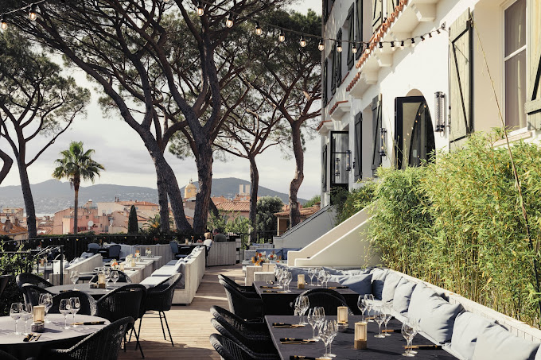
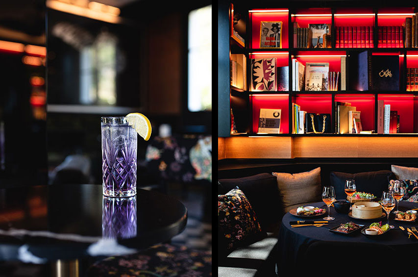

Le Tigrr: Situato all’interno dell’Hotel Hermitage, rende omaggio alla nobilta' dell’animale immortalato in un ritratto dove posa maestoso tra la sabbia e il bambu'. La sua immagine presiede il tavolo reale del luogo, intorno sono disposte altre postazioni ed e' presente anche una piccola pista da ballo che si animera' con la musica del DJ privato.

Una fitta vegetazione, bambu', querce e pini centenari si aprono su una vista panoramica sul golfo di Saint Tropez. Dal punto di vista culinario invece, il menu' gioca sugli accordi asiatici cari a le Tigrr. Un vero angolo di paradiso lontano dalla mondanita' caotica del porto.